Navigate your car down the track to reach the end.
Tilt your car forward using the right arrow.
Tilt your car backward using the left arrow
Press the down arrow to apply the brakes
Press the space bar to restart the current level
Press keys 1, 2, or 3 to change the camera angle